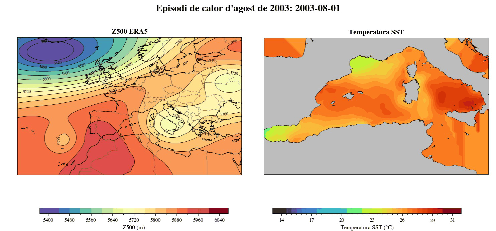

Episodis atmosfèrics i temperatura superficial del mar
Comparació animada de l'altura geopotencial a 500 hPa i la temperatura SST observada a la Mediterrània occidental. La SST no és una anomalia: és temperatura absoluta en °C.

2003: Z500 ERA5 i SST observada del fitxer regional preparat; frames diaris de l'1 al 18 d'agost.